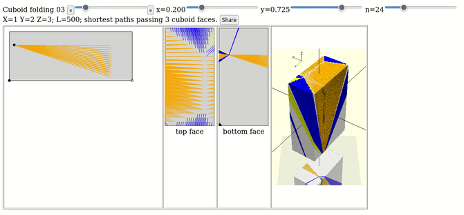

Planar graph playground

RSA_numbers_factored/ (transpiled RSA_numbers_factored.py, BigInt in browser
https://hermann-sw.github.io/RSA_numbers_factored/R.html/
https://hermann-sw.github.io/RSA_numbers_factored/validate.html/
https://hermann-sw.github.io/RSA_numbers_factored/squares.html/
https://hermann-sw.github.io/planar_graph_playground/
Planar graph playground
https://hermann-sw.github.io/cuboid_shortest_paths
Determine and visualize shortest paths between single point on bottom face and many points on top face of cuboid

https://hermann-sw.github.io/javascript-sphere/
Simple 3D sphere JavaScript demo
https://stamm-wilbrandt.de/GraphvizFiddle/
<GraphvizFiddle/> (online Graphviz editor&layout [based on Viz.js])

https://stamm-wilbrandt.de/en/xsl-list/peg-solitaire/
It knows all solutions for 33/37/39 pegs English/French/3-3-2-2 boards.
You may choose "Cheat" link (based on 1+16+64=81GB data files on the website).

https://stamm-wilbrandt.de/xqib/
https://stamm-wilbrandt.de/en/xsl-list/n-queens/n-queens.xsl.xml

https://stamm-wilbrandt.de/echo-e.to.braille.html
⠀⠀⣀⠀⣀⣀⠀⢹⣀⠀⡀⣀⢀⡀⢀⣄⡀⢀⡀⠈⣇⡀⢀⢀⡀⢀⡀⢀⡁⢹⠈⡇⠀⣀⠀⢀⠇⣀⠀⠀⠀⠀⢀⠎⢀⠞⠉⠺⠈⢆ ⠒⠭⣀⠀⢸⠀⡇⢸⠀⡇⢸⠀⡇⢸⠀⡇⠀⡇⢸⠀⡇⢸⠀⡏⠀⡕⢺⠀⡇⢸⠀⡇⢸⡒⢃⡜⠀⣀⠭⠒⠀⠀⢸⠀⠘⣄⠀⣠⠀⢸ ⠀⠀⠀⠀⣸⡉⠀⠈⠉⠀⠉⠁⠉⠈⠁⠈⠁⠈⠁⠀⠉⠁⠈⠉⠀⠈⠁⠉⠉⠉⠉⠉⠀⠉⠁⠁⠀⠀⠀⠀⠀⠀⠈⢆⠀⠈⠉⠁⢀⠎